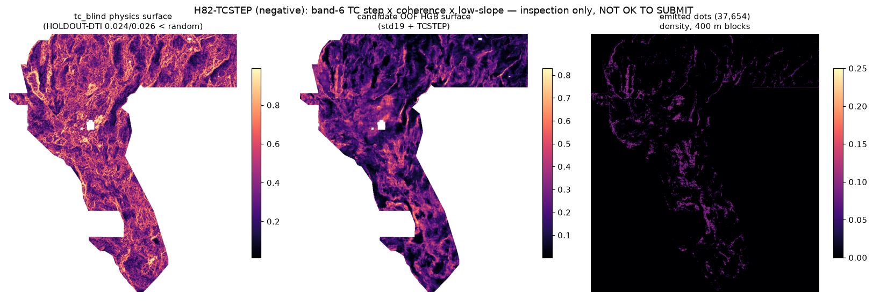

H82-TCSTEP: radiometric total-count lithologic-offset step lineaments
OK to download for inspection: YES. — NOT OK TO SUBMIT. This is a negative result. HOLDOUT-DTI 0.0688 (seed 20) / 0.0700 (seed 30) is far below the 0.152718 repository incumbent, the paired gain over the identical-band control is null, the literal registry gate fails by construction (dense witness), and the selector status is: not approved (no file is approved). Zero weekly submission slots were used. There is currently no file anywhere in this repository that is OK to submit (see submission-authorization.json).
⬇ The H82 file (inspection only — DO NOT SUBMIT)
gems77-h82-tcstep-37654dots-20261021-2c501fd1-zeros.tif (134,535 bytes) · single-TIFF .zip
- sha256:
2cc14ba3ec8a6ea114c821445ff0ee90f84c7a8e62720e80c533c05475f76860 - Format (local validator, all checks PASS): single-band float32, EPSG:32611, 3730 × 3292, transform
identical to
sample_submission.tif, values exactly {0.0, 1.0} in [0, 1], 0 NaN anywhere, nodata = none, 37,654 dots, 0 dots on mapped catalogue faults, min dot-to-catalogue distance 2.24 px. The earlier portal error “Predicted values must be in range [0, 1]” cannot come from value range on this file — but a local format PASS is not organizer acceptance and not permission to submit. - Submission name:
gems77-h82-tcstep-37654dots-20261021-2c501fd1-zeros - Note-field text (106 chars):
H82-TCSTEP band6 TC step x coherence x low-slope + std19 HGB LOQO; 37654 dots sep2.8px >2px from catalogue
What was tested (pre-registered, 3 experiments)
Hypothesis, ranked candidates, and stop rules were written before Experiment 1: registry/preregistration_h82tcstep.json · research/hypotheses-h82-2026-10-21.md.
Hypothesis. A concealed normal fault under basin fill offsets radiometrically distinct
lithologies, leaving a sharp, strike-persistent step in airborne gamma total count
(training_features band 6 — measured in-repo to be radiometric TC, Spearman 0.99995 vs
the external GeoDAWN TC grid) where no scarp exists (low det_elev_slope).
Named mimics: alluvial-fan / Lake Lahontan shoreline lithologic boundaries, volcanic unit
contacts, survey line-levelling seams.
| Experiment | Result (all numbers labelled) |
|---|---|
| E1 leakage canaries + surface uniqueness | Max single-channel symmetric AUC 0.518 (s20) / 0.503 (s30), ceiling 0.90 → no leakage. Pre-placement surface max |Spearman ρ| = 0.063 (tc_blind) and 0.073 (candidate OOF surface) vs 33 locally present rasters → no lane drift in checked scope. evidence |
| E2 hide-and-recover HOLDOUT-DTI (gems57-pooled-hide-v2; α=0.2, β=0.8, 300 m triangular kernel) | Seed 20 (11,321 withheld positives): candidate 0.0688 [0.0540, 0.0862]; paired control 0.0697; physics surface 0.0242; random 0.0445; paired Δ vs control −0.0009 [−0.0069, +0.0054]. Seed 30 (11,342 withheld): candidate 0.0700 [0.0550, 0.0862]; control 0.0696; physics 0.0261; random 0.0469; Δ +0.0004 [−0.0074, +0.0081]. evidence |
| E3 build + final-dot uniqueness + validator | Worst 3-px forward overlap vs 36 checked sparse local rasters = 0.391 (≤ 0.70) after correcting a self-copy scan artefact (IR-H82-01); literal gate still FAILS by construction vs dense-support rasters; complete registry not scanned. evidence · run card |
Reading. The deterministic TC-step surface scores below random on both seeds: blind TC steps at 100 m are dominated by fan/shoreline lithology boundaries, not concealed faults. Adding the channels to a 19-band HGB changes nothing (the control already sees TC amplitude). H82 is therefore closed — do not re-tune it. A negative result is a deliverable: it removes band-6 step geometry from the search space for every later lane.

Why did the family champion score 0.2778, and what would beat it?
Verified lineage in evidence/why_02778.json: on one fixed H19-5 ridge surface, dotting at 2.8 px and deleting dots within 2 px of the catalogue raised the reported score 0.1922 → 0.2778 purely by emission geometry (credit/dot 0.053 → 0.125 under the S0 instrument; the 0.2778 itself is OWNER-REPORT — this repo holds no organizer receipt for that file, and the public leaderboard top read 0.4413 ORGANIZER-CONFIRMED on 2026-10-21). Geometry is already near-optimal at 37,654 dots; only a surface with materially higher covered-truth credit per dot can beat it. H82's surface does not have it.
Sources for manual review
- Competition overview / metric: drivendata.org/.../page/967
- Leaderboard: drivendata.org/.../leaderboard
- Reference solution: github.com/drivendataorg/gems-prize-reference-solution
- Rules PDF: docs.nlr.gov/docs/fy26osti/96647.pdf
- GeoDAWN (USGS): usgs.gov GeoDAWN data release
- INGENIOUS: gbcge.org/current-projects/ingenious · EPSG:32611: epsg.io/32611 · Tversky index: en.wikipedia.org/wiki/Tversky_index
Limitations: DrivenData files are login-walled, so training_features.tif
was restored from the owner's SHA-pinned GitHub mirror (sha256 4371c82e…, verified this session;
integrity-pinned, not organizer-authenticated). No GPU, no organizer account, and no complete
registry scan were available in this sandbox. Nothing on this page is a leaderboard projection.